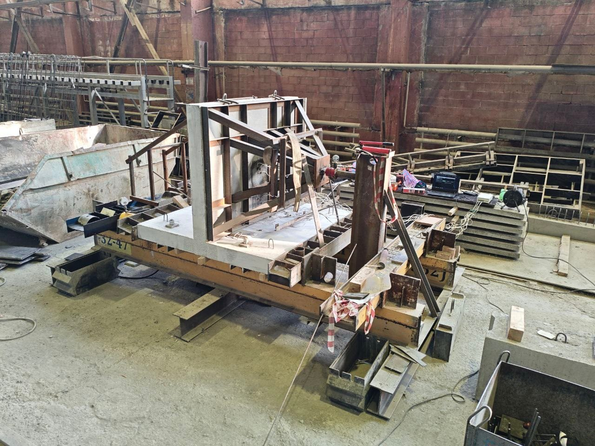
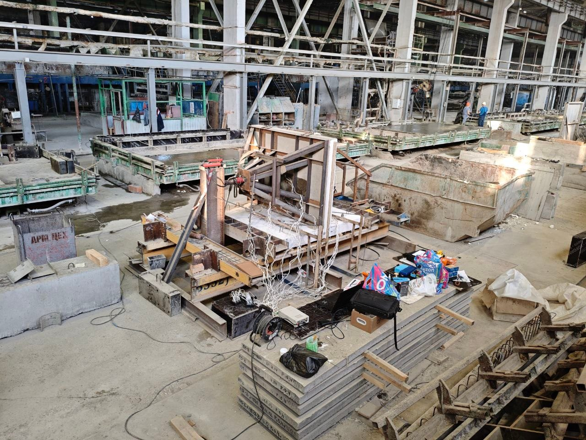
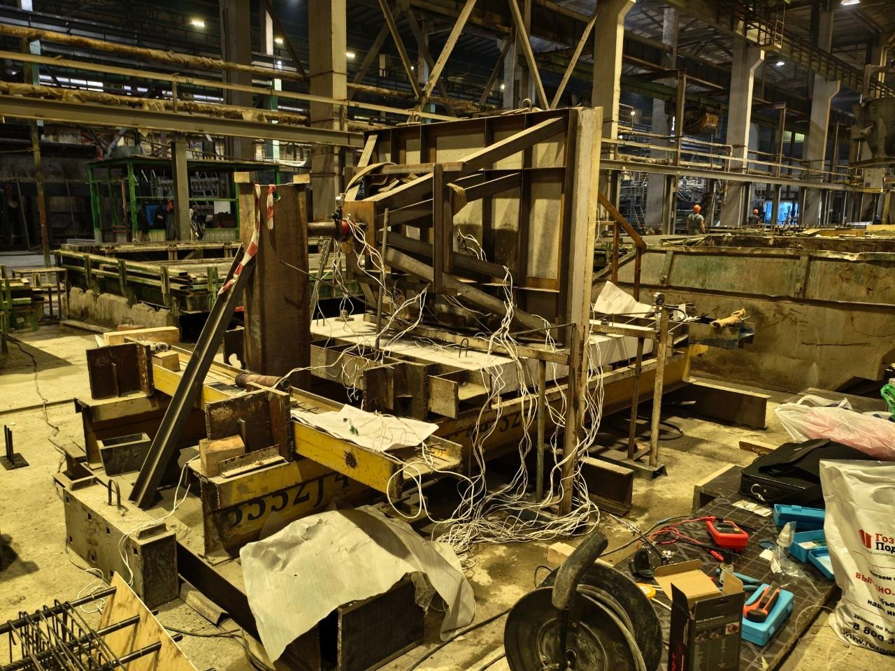
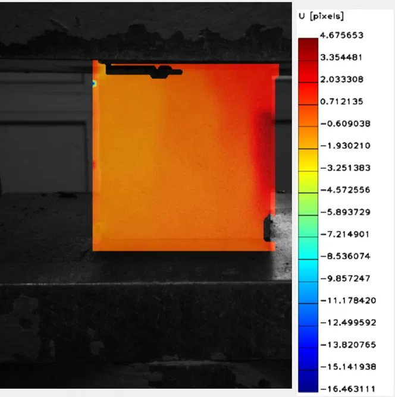
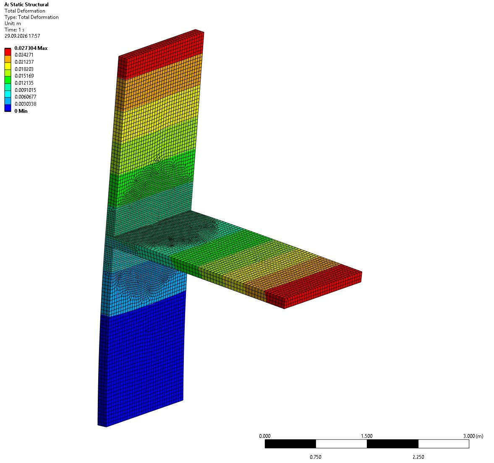
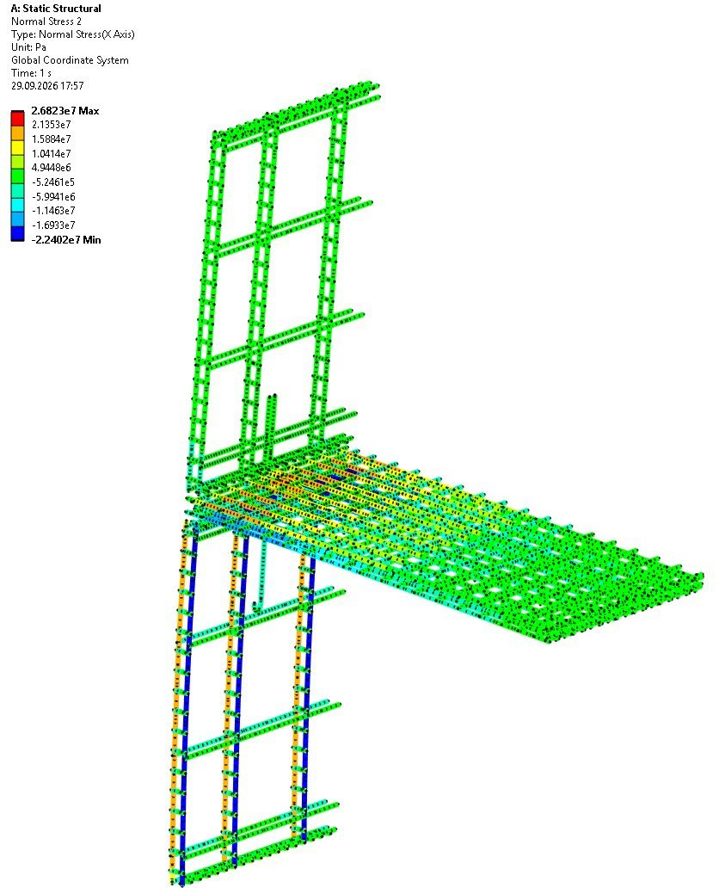
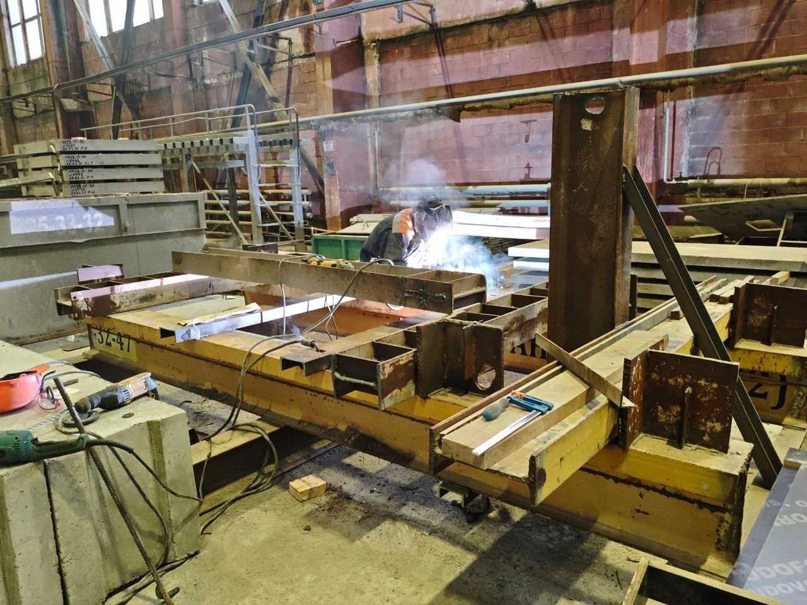
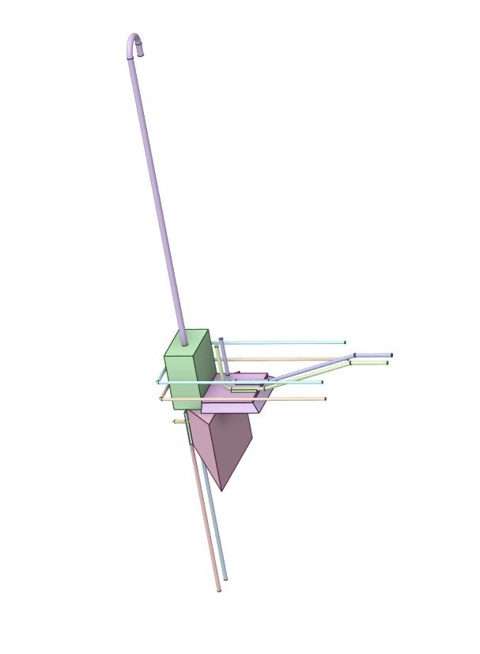

Новости проекта
Ход работ по кварталам: от испытательного стенда и трёхмерных моделей до натурных испытаний и валидации методики.
Натурные испытания и валидация методики
Натурные испытания стыка
Для валидации расчётной методики заформованы и испытаны два железобетонных образца стыка — плиты перекрытия и стеновые панели. Образцы нагружались на силовом стенде до разрушения; деформации бетона и арматуры записывались многоканальной тензометрической системой.
Результаты испытаний согласуются с расчётом по методике — проверка прошла успешно. Программа натурных испытаний продолжается.



Цифровая корреляция изображений (DIC)
Во время испытаний применена новая методика измерений — цифровая корреляция изображений (DIC). Камера фиксирует поле деформаций по всей поверхности образца, а не только в точках установки датчиков. Это дополнило данные тензометрии и позволило увидеть, как развиваются деформации в зоне стыка.

Численный эксперимент и расчётная методика
Численный эксперимент: 54 расчёта в ANSYS
Проведена серия из 54 расчётов трёхмерных моделей стыка в ANSYS Mechanical с варьированием шести параметров: толщины шва, марки раствора, армирования панелей, эксцентриситета нагрузки, класса бетона и наличия включений. Для каждой модели определены перемещения элементов, напряжённо-деформированное состояние бетона и усилия в арматуре панелей и плиты.
Результатом серии стали зависимости прочностных характеристик стыка от этих параметров по трём предельным состояниям: образованию трещин, текучести арматуры и разрушению. Эти зависимости легли в основу расчётной методики и онлайн-калькулятора.


Подготовка: стенд и трёхмерные модели
Изготовление испытательного стенда
Изготовлен силовой стенд для испытаний стыка: горизонтальная рама с гидравлическими домкратами. В горизонтальном положении плиту перекрытия удобно нагружать отдельно от стеновых панелей.

Разработка трёхмерных моделей
Разработаны трёхмерные модели стыка: стеновые панели, плита перекрытия, растворные швы, армирование и анкерный узел. Модели стали основой для расчётов в ANSYS.

Старт проекта
Регистрация компании
19 ноября 2025 года зарегистрировано ООО «СЫЗЫМ» — компания для реализации проекта и вывода методики расчёта стыков на рынок.
Грант Фонда содействия инновациям
Проект «Разработка методики расчёта стыков железобетонных стеновых панелей» получил грантовую поддержку Фонда содействия инновациям по программе «Студенческий стартап». Подробнее о поддержке.